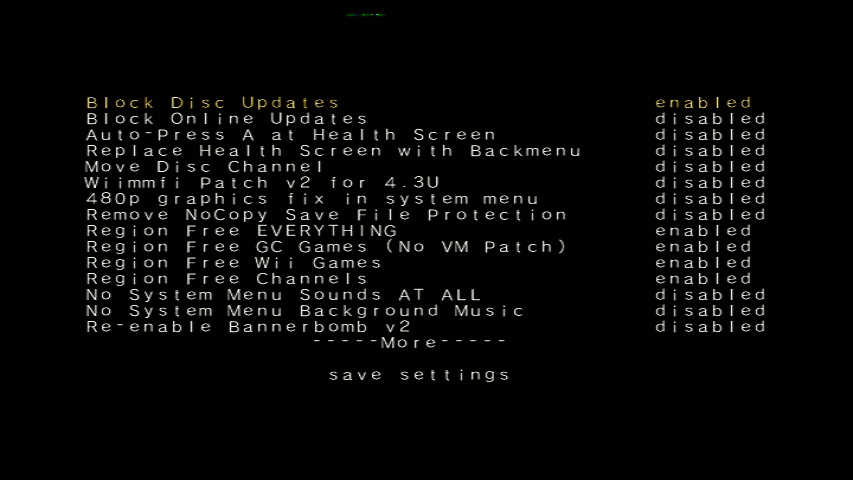

Priiloader
如果需要中文帮助，国内用户可以添加QQ群：417992332。
如果你需要有关本教程的任何帮助, 请加入RiiConnect24 Discord服务器 (推荐)或 发送电子邮件到 [email protected]。
Priiloader向Wii添加了一定程度的变砖保护。 它在Wii菜单之前加载(因此得名)。 此工具还可以修改Wii菜单，快速启动Homebrew Channel、BootMii或任何你想要的自制软件!

不要在vWii(Wii U的Wii模式) 上安装Priiloader。 这样会把vWii变砖。
你需要的是
- 一张SD卡或U盘
- Priiloader 安装程序
步骤
第一节 - 下载/安装
- Download the Priiloader installer and extract it to the root of your SD card or USB drive.
第二节 - 安装Priiloader
- 启动Wii上的Homebrew Channel。
- 启动Priiloader 安装程序。
- 按Wii遥控器上的+或GameCube手柄上的A。


第三节 - 进入/配置 Priiloader
- 打开Wii的同时按住RESET按钮。
- 如果使用Wii Mini，插入USB键盘并在启动时按住Esc。


- 你应该看见Priiloader菜单。

- 点击
System Menu Hacks.
如果使用U盘安装Priiloader，请确保没有插入SD卡。 这将导致Priiloader找不到hacks_hash.ini.
- 我们推荐您打开:
Region Free EVERYTHING,Block Disc Updates和Block Online Updates.  - 向下滚动到
save settings按A, 然后按B回到Priiloader菜单。 - 滚动到
Homebrew Channel并按A启动它。
System Menu Hacks 列表
这是你可以通过Priiloader启用的修改列表。
| 修改 | 描述 |
|---|---|
| Block Disc Updates | 移除一些游戏附带的”Wii系统更新”，这些游戏强迫您在玩游戏前更新系统。 |
| Block Online Updates | 禁用Wii的更新。 更新将显示错误32007。 |
| Auto-Press A at Health Screen | 在”健康与安全”屏幕自动按A。 |
| Replace Health Screen with Backmenu | 将”健康与安全”屏幕替换为返回Wii菜单时的动画。 |
| Move Disc Channel | 启用在Wii菜单上移动光盘频道。 它通常固定于第一页左上角。 |
| Wiimmfi Patch v4 | 自动给光盘频道运行的游戏打Wiimmfi补丁。 |
| 480p graphics fix in system menu | 修复Wii菜单480p时的小问题。 |
| Remove NoCopy Save File Protection | 允许您将不允许复制的文件复制到SD卡。 |
| Region Free EVERYTHING | 禁用Wii应用的区域锁定，包括已下载的应用。 |
| Region Free GC Games (No VM Patch) | 禁用GameCube光盘的区域锁定。 |
| Region Free Wii Games | 禁用Wii光盘的区域锁定。 |
| Region Free Channels | 禁用已安装频道的区域锁定。 |
| No System Menu Sounds AT ALL | 禁用Wii菜单音效。 |
| No System Menu Background Music | 禁用Wii菜单背景音乐。 |
| Re-Enable Bannerbomb v2 | 为最新版本Wii启用”BannerBomb”。 当Homebrew Channel已安装时不需要。 |
| OSReport to UsbGecko(slot B) | 将Wii菜单日志发送到记忆卡B |
| OSReport to UsbGecko(GeckoOS,B) | 将Wii菜单日志发送到记忆卡B(如果Wii菜单由GeckoOS启动)。 |
| Force Standard Recovery Mode | 启动时自动进入恢复模式。 用户救砖时用于启动恢复光盘。 |
| Remove Diagnostic Disc Check | 移除Wii检查插入的光盘是否与”Wii启动光盘”的ID相同。 |
| Lock System Menu with Black Screen | 将Wii菜单加载到黑屏，使您无法使用。 (不要启用) |
| No-Delete HAXX,JODI,DVDX,DISC,DISK,RZDx | 重新启用带这些ID的频道(由于被用于破解，系统更新后被禁用)。 |
| Force Disc Games to run under IOS249 | 让光盘使用cIOS249运行游戏。 虽然不能玩刻录游戏，但需要刻录光盘。 (未刻录游戏将提示错误002) |
继续Wii破解可以做和不可以做的事
这些是注意事项，以确保您的Wii不会变砖。